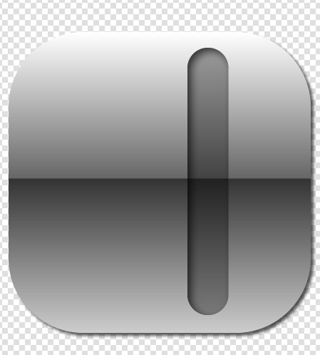
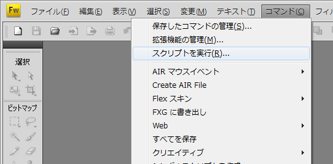
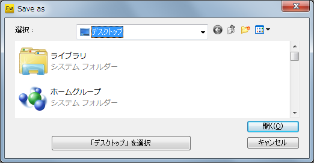

toAndroid
Overview
toAndroid is script for Fireworks.
toAndroid can output multiple densities image when single action.
Prerequisites Adobe fireworks cs4 or higher. xxhdpi image. I strongly recommend vector image.
How to use
Open or create the your xxhdpi image file on Fireworks.
Create content
Create content image for yourself.
Image densities is xxhdpi.(480pixcel per inch)

Run toAndroid.jsf
Finaly run toAndroid.jsf.

Display save dialogue if you do not save.
Next choice output directory.

toAndroid create "output" directory in you selected location.
Output directory included each density folda include image and originalImage.png.
You do not need originalImage.png. it's backup to original image.
You must delete originalimage.png before you include images on your android project.

Done.
Licence

Query
github or firespeed.org